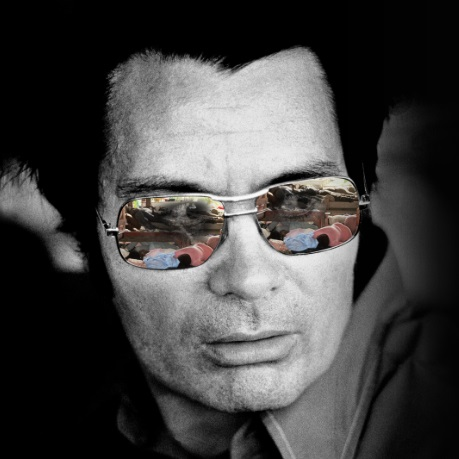

The Death Tape
Jonestown Suicides
November 18th 1978
In this November 18th 1978 recording, Jim Jones leads 909 members of his congregation in the largest mass suicide in history. (San Francisco Examiner / The Life & Death of Peoples Temple / JMK)